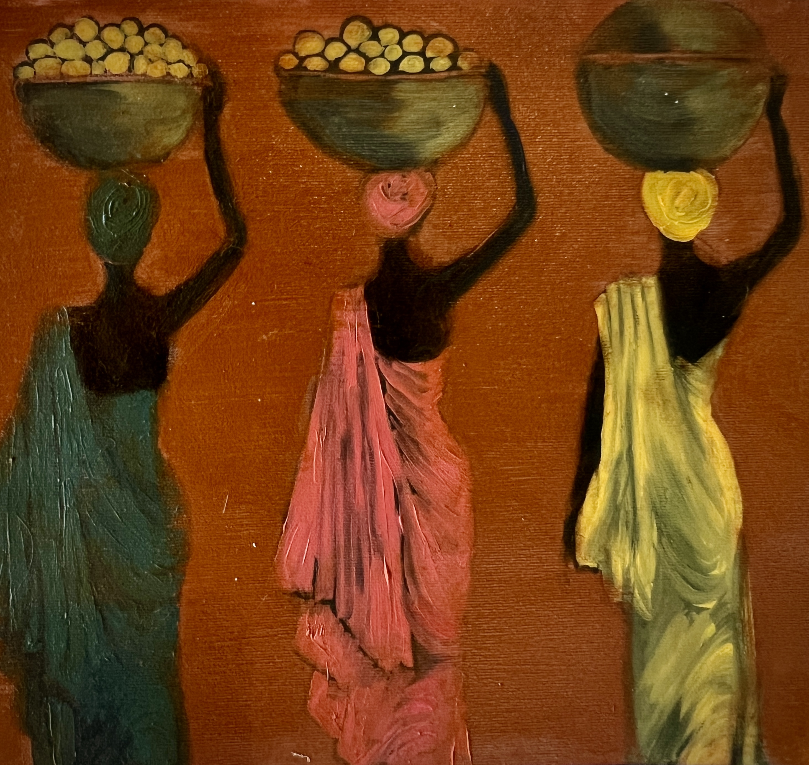
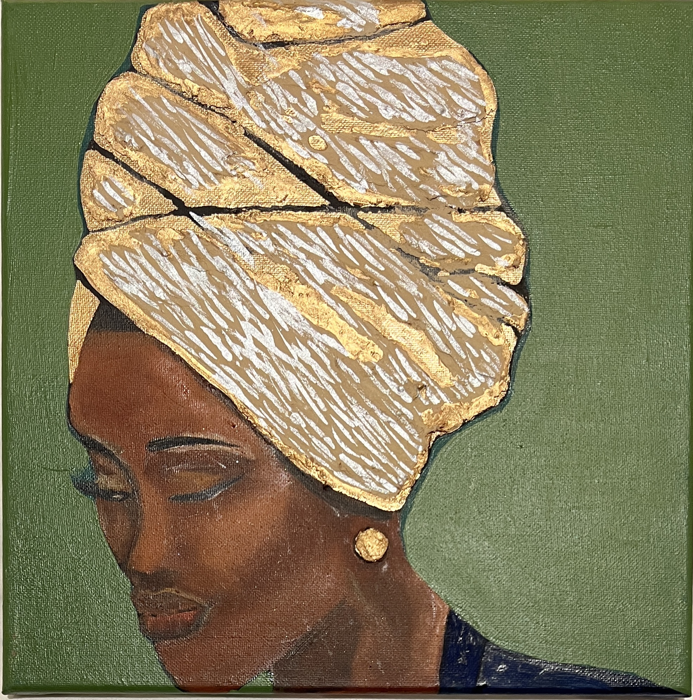
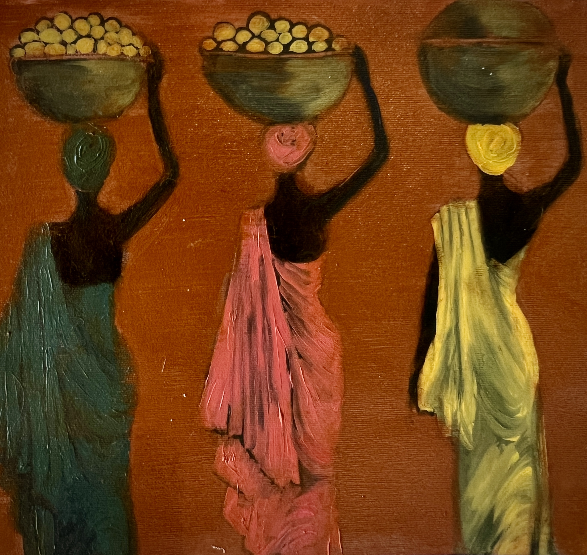
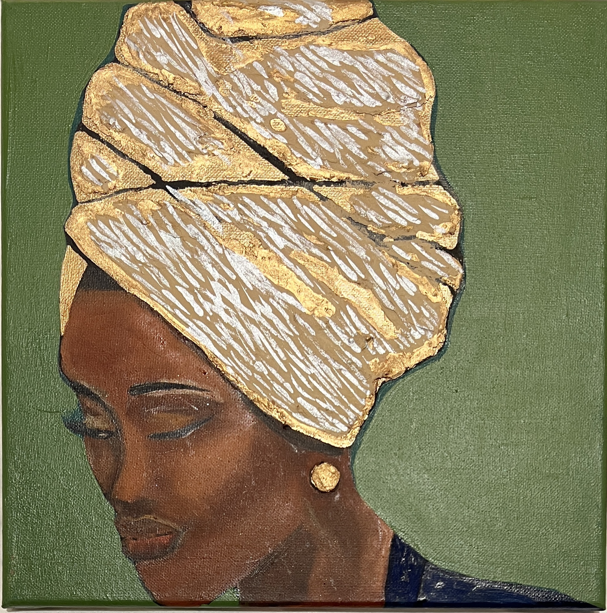
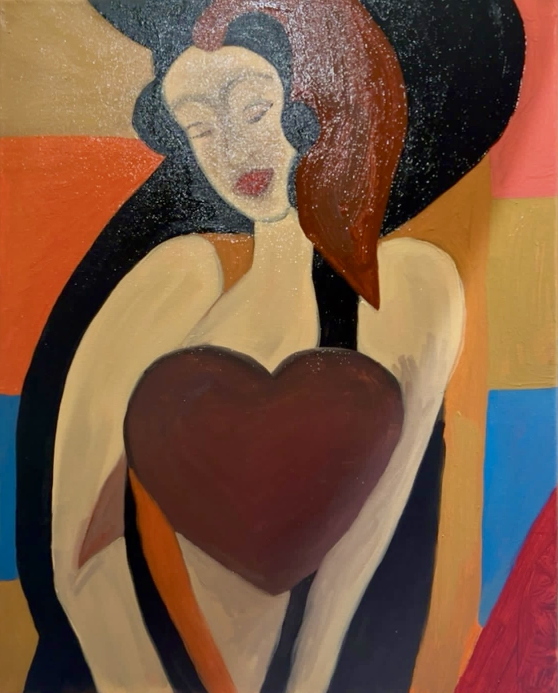
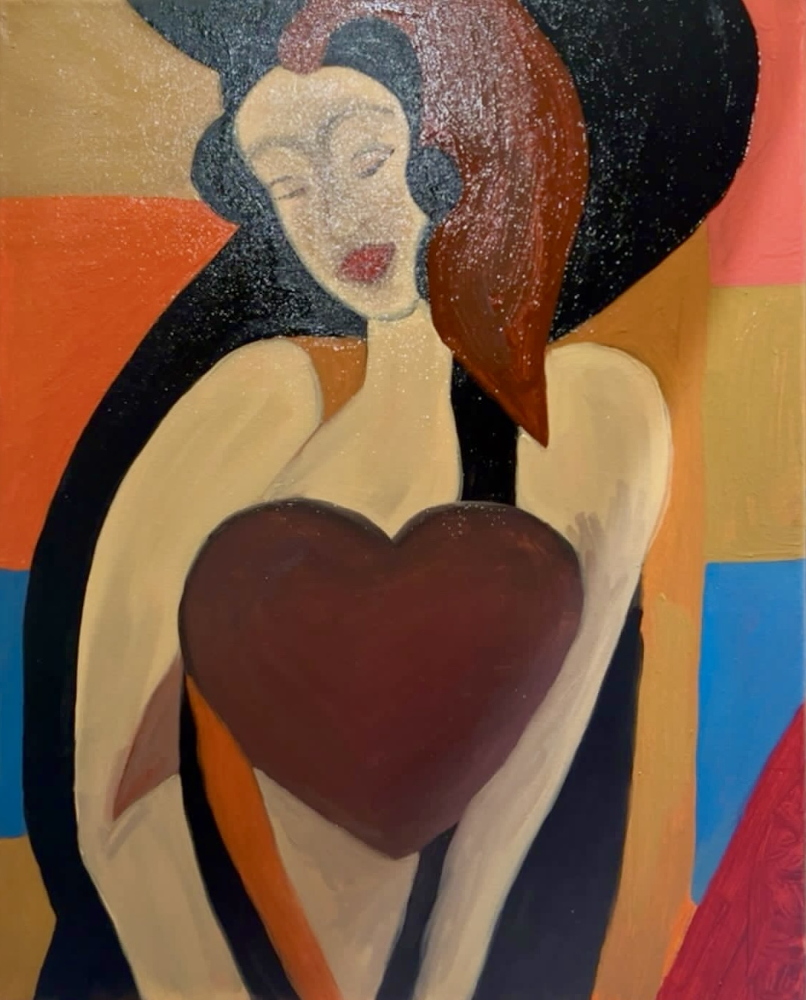

About Me
I am a London-based Nigerian artist whose work is deeply rooted in the beauty, resilience, and richness of African culture and heritage. My journey into painting began as a personal escape—a hobby that brought me joy and solace. But in 2020, when I was laid off during the COVID-19 pandemic, art became my full-time passion, transforming my life in ways I never anticipated.
Five years in, I have exhibited my work extensively across the UK, sharing visual narratives that celebrate identity, tradition, and the stories of my people. My paintings, often created with oil on linen, blend portraiture and abstraction, capturing the spirit of African heritage with expressive textures and bold colors. I use an underpainting technique with white oil to bring depth and light to my compositions.
Beyond exhibitions, I am committed to using art as a tool for cultural preservation and dialogue. Through my work, I hope to inspire conversations, bridge histories, and connect people to the richness of African traditions. I continue to refine my craft, drawing inspiration from workshops, exhibitions, and the encouragement of fellow artists like Gabriel, whose support marked a turning point in my artistic journey.
This is more than just art for me—it is a mission to honor the past, celebrate the present, and shape the future through creativity.
Gallery
 



 
